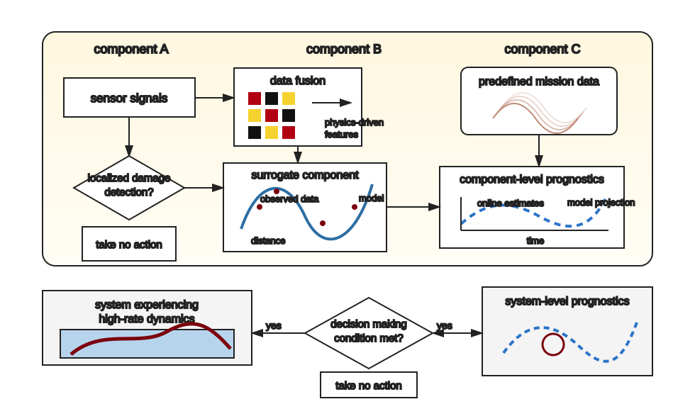

Research Themes
Explore our work in adaptive autonomy, structural health monitoring, digital twins, resilient infrastructure, and aerospace systems.
View research areasAn interdisciplinary research lab at Your University
 YOUR
YOURThe Reveal Labs develops methods, tools, and experimental systems that help complex engineered systems adapt to changing environments in real time. Replace this paragraph with a concise description of your lab mission, your university, and the research problems your group studies.

Explore our work in adaptive autonomy, structural health monitoring, digital twins, resilient infrastructure, and aerospace systems.
View research areasBrowse journal papers, conference proceedings, preprints, and student-led publications.
View publicationsFind software, datasets, templates, teaching materials, and public repositories.
View resourcesAdd links to working groups, student reading groups, sponsored projects, and cross-campus collaborations. You can create new pages by copying any existing HTML page and adding it to the navigation menu.
Featured paper placeholder: add a news item about a newly accepted journal article.
We are recruiting: add details about Ph.D., M.S., undergraduate, or postdoctoral openings.
Software release placeholder: announce a new open-source tool or dataset.